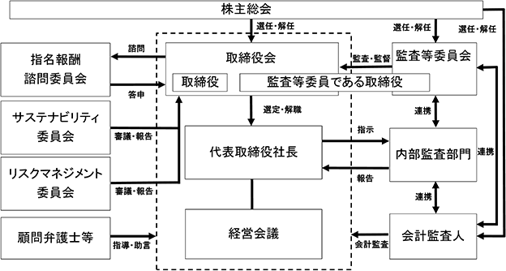

該当事項はありません。
該当事項はありません。
③ 【その他の新株予約権等の状況】
該当事項はありません。
該当事項はありません。
(注) 2009年８月17日開催の取締役会決議により、2009年10月１日付をもって１株を２株に分割しております。
2024年２月20日現在
(注) １．自己株式386株は、「個人その他」に３単元、「単元未満株式の状況」に86株含まれており、「金融機関」 には、日本マスタートラスト信託銀行株式会社（役員報酬BIP信託口・75691口）が所有する当社株式1,260 単元が含まれております。
２．上記「その他の法人」には、証券保管振替機構名義の失念株式14単元が含まれております。
2024年２月20日現在
(注) １．上記所有株式数のうち、信託業務に係る株式数は次のとおりであります。
２．2023年11月7日付で公衆の縦覧に供されている大量保有報告書の変更報告書において、三井住友ＤＳアセッ
トマネジメント株式会社が2023年10月31日現在で以下の株式を所有している旨が記載されているものの、
2024年２月20日時点における実質所有株式数の確認ができませんので、上記大株主の状況には含めておりま
せん。なお、大量保有報告書の変更報告書の内容は以下のとおりであります。
2024年２月20日現在
(注) １．「完全議決権株式（その他）」欄の普通株式には、証券保管振替機構名義の失念株式が1,400株（議決権の数14個）含まれております。
２．「完全議決権株式（その他）」欄の普通株式には、役員報酬BIP信託が所有する当社株式が126,000株（議決権の数1,260個）含まれております。
３．「単元未満株式」欄の普通株式には、当社所有の自己株式が86株及び役員報酬BIP信託が所有する当社株式が70株含まれております。
2024年２月20日現在
(注) 上記のほか、役員報酬BIP信託が所有する当社株式126,070株を貸借対照表上、自己株式として処理して
おります。
(8) 【役員・従業員株式所有制度の内容】
当社は、2014年６月19日より「役員報酬BIP信託」を導入しております。役員報酬BIP信託とは、米国のパフォーマンス・シェア（Performance Share）制度及び譲渡制限付株式報酬（Restricted Stock）制度を参考にした役員インセンティブ・プランであり、各事業年度の業績指標及び役位に応じて取締役に当社株式が交付される株式報酬型の役員報酬です。
当社は、取締役のうち一定の要件を充足する者を受益者として、当社株式の取得資金を拠出することにより信託を設定します。当該信託は予め定める株式交付規程に基づき取締役に交付すると見込まれる数の当社株式を、株式市場から取得します。
その後、当社は株式交付規程に従い、取締役に対し各事業年度の業績指標及び役位に応じてポイントを付与し、原則として、取締役退任時に累積ポイントに相当する当社株式を当該信託を通じて無償で交付します。
信託契約の内容
5年間で上限115,000株
取締役のうち受益者要件を充足する者
該当事項はありません。
該当事項はありません。
該当事項はありません。
(注) １．当期間における保有自己株式数には、2024年５月１日から有価証券報告書提出日までの単元未満株式の買取
りによる株式数は含まれておりません。
２．「保有自己株式数」には、役員報酬BIP信託が所有する株式数を含めておりません。
①利益配分に関する基本方針
当社は、株主の皆様に対する利益還元を経営上の重要課題の一つとして位置付けており、一層の経営基盤強化と中長期的な成長投資のために必要な内部留保を確保しつつ、株主の皆様への公平な利益還元の在り方という観点から、配当性向35％を目安に継続的な配当を行なっていくことを基本方針としております。
なお、当社は、取締役会の決議によって、毎年８月20日を基準日として中間配当を実施できる旨を定款に定めており、中間配当と期末配当の年２回の剰余金の配当を行なうことを基本方針としております。剰余金の配当の決定機関は、中間配当については取締役会、期末配当については株主総会であります。
②当期（2024年２月期）の剰余金の配当
経営基盤強化の進捗状況や当期の業績も総合的に勘案し中間配当を１株当たり22円50銭、期末配当を１株当たり22円50銭とし、年間配当を１株当たり45円としております。この結果、当事業年度の配当性向につきましては、37.7％となります。
③次期（2025年２月期）の剰余金の配当
来期の配当金につきましては、中間配当、期末配当をそれぞれ、１株当たり25円とし、年間配当を50円と予定しております。
（注） 基準日が当事業年度に属する剰余金の配当は、以下のとおりであります。
当社は、持続的に企業価値を向上させ、適正な事業活動を維持・確保するためにはコーポレート・ガバナンスの充実が不可欠であると考えており、ガバナンス体制の評価を定期的に実施し、強化、構築に取り組んでいます。
(a) 将来的に経営の監督と業務執行を分離し、所謂モニタリング型の取締役会を志向し、経営の監督を強化して
まいります。
(b) 重要な業務執行の決定の一部を取締役に委ね、事業展開、業務運営の迅速化を図ってまいります。
(c) 監査体制を充実し、監査等委員会、会計監査人及び内部監査部門が緊密に連携し、経営の透明性、公正性を高めてまいります。
(d) 各ステークホルダーとの円滑な関係を構築するとともに、健全な経営に対する社会からの信頼を得るため、経営情報の適時適切な開示を行ない、積極的に説明責任を果たしてまいります。
(a) 企業統治の体制の概要
当社は、監査等委員会設置会社を採用しており、企業統治の体制として以下の機関を設置しております。
イ．取締役会
取締役会は、取締役（監査等委員である取締役を除く。）４名及び監査等委員である取締役３名（うち社外取締役３名）の計７名で構成されており、経営の基本事項を中心とした業務執行に関する会社の意思決定をするとともに取締役の職務執行を監督する機関として、取締役会を月１回開催するほか、必要に応じて機動的に臨時取締役会を開催しています。
ロ．監査等委員会
監査等委員会は、監査等委員である取締役３名（うち社外取締役３名）で組織されており、取締役の職務の執行の監査及び監査報告の作成等を行なう機関として、月１回以上開催しているほか、定期的に代表取締役社長と会合し、監査上の重要課題等について意見表明及び情報の交換を行なっています。
ハ．経営会議
経営会議は、常勤取締役、各執行役員及び各部門長で構成されており、経営に関する重要な事項について審議し、各部門の業務執行状況の報告を行なっています。
ニ．指名報酬諮問委員会
指名報酬諮問委員会は、取締役会の決議によって選任された委員３名以上で構成し、その過半数は独立社外取締役とし、取締役候補者の指名や取締役（監査等委員である取締役を除く。）の報酬等について、取締役会からの諮問に応じて審議し、その結果を取締役会へ答申しております。
ホ．サステナビリティ委員会
サステナビリティ委員会は、業務執行取締役、各執行役員及び各部門長で構成されており、サステナビリティに関する全社的取組みの審議等を行なうとともに、当該審議内容について、取締役会へ報告をしています。
ヘ．リスクマネジメント委員会
リスクマネジメント委員会は、常勤取締役、各執行役員及び各部門長で構成されており、当社のリスクを網羅的に把握、評価するとともに、その対策について審議し、当該審議内容を取締役会へ報告しています。
機関ごとの構成員は次のとおりであります。（◎は議長・委員長、○は構成員を示しております。）
当社のコーポレート・ガバナンス体制の概略図は以下のとおりであります。

(b) 現状の体制を採用している理由
当社は、監査・監督機能の強化、経営の迅速化を図るため、監査等委員会設置会社を選択しています。
③ 企業統治に関するその他の事項
(a) 内部統制システムの整備の状況
１．取締役の職務の執行が法令及び定款に適合することを確保するための体制
当社及び子会社は、経営理念、行動指針を日常の事業活動の指針とするとともに、代表取締役がその精神
を取締役及び使用人に継続的に伝達し、取締役は、社会規範・法令遵守を率先垂範することにより社会の構
成員としての倫理観、価値観に基づき誠実に行動することを浸透させ徹底を図っております。
取締役会は法令・定款・諸規程に基づいた取締役の業務執行の監督を行ない、取締役は相互の業務執行を
監視し、また、監査等委員会は法令に定める権限により、規則・基準に基づき監査を実施しております。
２．取締役の職務の執行に係る情報の保存及び管理に関する体制
情報及び文書の取扱いに関して、取締役の業務執行に関わる内容を含め、適切かつ確実な状態で記録し、
稟議規程、内部情報管理規程、文書管理規程、個人情報保護管理規程及びマニュアルに基づき、法令・定
款に則した期間と内容を設定し、保存・管理を行なっております。
また、これら保存・管理された文書・情報はデータとして検索が可能であり、閲覧の容易性を確保してお
ります。管理の運用・手続き及び体制については、監査等委員会による取締役の業務執行状況の監査、及び
内部監査部門による内部監査の実施により必要に応じて改善措置を行なっております。
３．損失の危険の管理に関する規程その他の体制
法令遵守、環境・気象条件、災害、品質・生産管理、情報管理、及び為替・輸入管理などに係る損失の危
険については、それぞれの担当部門にて、規程・要領の制定、研修会などの開催又は派遣、マニュアルの作
成・配布と周知徹底により損失危険の軽減と事態発生の予防安全対策を行なっており、各部門を横断する損
失の危険につながる事案については総務部門が担当、監視しております。
４．取締役の職務の執行が効率的に行なわれることを確保するための体制
将来の事業展開構想と経営目標に基づき、経営方針を定め、中期経営計画を策定し、予算委員会が同計画
の下、毎期当初に部門ごとの業績目標と予算を立案し、取締役会において承認・実施しております。
部門担当取締役は、目標達成・重点事項推進のため実施すべき内容を具体的・効率的な施策として計画・
実施し、月次業績データを取締役会に報告しております。
取締役会は、予算差異について要因分析と必要な対策を求め、継続的な改善がより合理的・効率的な業務
遂行体制の維持と目標達成につながるよう図っております。
また、当社の経営理念・計画につき、投資家を始め多くの利害関係者の理解を得ることが事業の推進・運
営にとってより効率的に作用すると考えているため、代表取締役社長が情報開示を統括し、適時・適切な情
報開示を実施するとともに、自ら説明会等における発表に務めております。
取締役会が、会社法及び定款の定めに基づき、重要な業務執行（会社法第399条の13第５項各号に掲げる
事項を除く。）の決定の全部又は一部を取締役に委任したときは、当該取締役は、当該委任された事項につ
いて、経営会議で審議のうえ、決定することができるものとしております。
５．使用人の職務の執行が法令及び定款に適合することを確保するための体制
当社は、行動指針の一つに「法規の遵守」を掲げており、定期的に実施している研修等により、従業員の
コンプライアンス意識の向上を図っているほか、内部通報制度を整備し、法令違反、不正行為等の早期発
見、是正に努めております。
また、内部監査業務を行なう社長直轄の内部監査部門を設置し、全部署を対象として計画的に実施する内
部監査を通じて、会社の業務実施状況の実態を把握し、すべての業務が法令・定款及び社内諸規程に準拠し
て適正・妥当かつ合理的に行なわれているか、会社の制度・組織・諸規程が適正・妥当であるかを公正・不
偏に調査・検討しております。
監査過程において発見された事項をまとめ監査報告書及び改善指示書として監査結果を社長に報告し、対
象部門に改善指示を通知、後日確認監査を行なうことにより、会社の財産の保全並びに経営効率の向上に努
め、業務を行なっております。
６．企業集団における業務の適正を確保するための体制
当社及び子会社は、実効性のある内部統制システムを構築するとともに、担当取締役から定期的な財務報
告を受け、業務の適正を確保する体制としております。
また、各部門の業務に関して責任を負う取締役を任命し、法令遵守体制、効率運営体制、損失又は危機管
理体制を構築する責任と権限を与えております。なお、各部門は業務分掌規程、職務権限規程を始め社内規
程により運営されており、担当取締役は取締役会においてこれら業務の執行状況について報告する義務を
負っております。
７．監査等委員会の職務を補助すべき使用人に関する事項
監査等委員会の職務を補助する使用人は、内部監査部門に所属する使用人とし、監査等委員会は、必要に
応じて同部門に所属する使用人に対して監査業務に必要な事項を命令することができるものとしておりま
す。
８．監査等委員会の職務を補助すべき使用人の取締役（監査等委員である取締役を除く。）からの独立性に関
する事項及びその使用人に対する指示の実効性の確保に関する事項
内部監査部門の使用人が監査等委員会の職務を補助すべき期間中は、その使用人への指揮権は監査等委員
会に委譲され、人事異動等の人事権に関しても、監査等委員会の同意を得た上で決定することとし、取締役
（監査等委員である取締役を除く。）からの指揮命令を受けない形で独立性を確保しております。また、
「監査等委員会監査等基準」により、その使用人に対する指示の実効性を確保しております。
９．取締役（監査等委員である取締役を除く。）及び使用人並びに子会社の取締役等から報告を受けた者が監
査等委員会に報告するための体制
当社及び子会社の取締役及び使用人は、業務又は業績の重要な事項について監査等委員会に報告を行なっ
ております。また、業務の執行に関する法令違反及び不正行為の事実、又は当社及び子会社に損害を及ぼす
事実を知ったときは、遅滞なく報告するものとしており、監査等委員会に報告を行なったことを理由として
当該報告者が不利な取扱いを受けないよう、社内規程を制定し当該報告者を保護しております。なお、報告
を行なったことを理由として、当該報告者が不利な取扱いを受けていることが判明した場合には、社内規程
により、不利な取扱いを除去するため速やかに適切な措置をとります。
監査等委員は重要な意思決定の過程や業務の執行状況を把握するため、取締役会及び経営会議等重要会議
に出席し、経営上の重要情報について報告と説明を受けており、重要な議事録、稟議書の回付、さらに必要
に応じて稟議書類等業務執行に係る重要な文書を閲覧し、取締役及び使用人に説明を求めております。
また、取締役は、財務報告の適正性及び定款・法令遵守状況等について、職務執行を誓約し、業務執行確
認書を監査等委員会に提出いたします。
10．監査等委員の職務の執行（監査等委員会の職務の執行に関するものに限る。）について生ずる費用の前払
又は償還の手続その他の当該職務について生ずる費用又は債務の処理に係る方針に関する事項
監査等委員は、監査費用の支出にあたっては「監査等委員会監査等基準」により、その効率性及び適正性
に留意し、職務執行上必要と認められる費用について予算を提出しております。また、緊急又は臨時に支出
した費用及び交通費等の少額費用については、事後、会社に償還を請求することができるものとなっており
ます。
11．その他監査等委員会の監査が実効的に行なわれることを確保するための体制
監査等委員会は、取締役の職務の執行の監査及び監査報告の作成等を行なう機関として、月１回以上開催
しているほか、定期的に代表取締役社長と会合し、監査上の重要課題等について意見表明及び情報の交換を
行なっております。
監査等委員である取締役は、合理的、効率的な業務監査を行なうため、取締役会をはじめ、重要な会議に
出席し、取締役（監査等委員である取締役を除く。）の職務執行状況を確認するとともに、内部監査部門と
意見交換を行なうなど緊密な連携を図っており、会計監査人とも連携を保つことにより監査及び監督の実効
性を確保するとともに自らの監査成果の達成を図っています。
12．財務報告の信頼性を確保するための体制
当社は財務報告の信頼性確保及び内部統制報告書の有効かつ適切な提出のため、代表取締役社長の指示の
下、財務報告に係る内部統制システムの構築、運用、評価及び改善を行ないます。内部監査部門は各事業年
度において財務報告に係る内部統制システムを評価し、その結果を社長及び取締役会に報告します。
取締役会は財務報告とその内部統制を監視し、代表取締役社長は、法令に基づき、財務報告とその内部体
制の整備運用状況及び統制システムが適正に機能することを継続的に評価するとともに、必要な改善により
適合性を確保します。
13. 反社会的勢力排除に向けた基本的な考え方及びその整備状況
基本方針
当社は、すべての役員及び使用人が社会秩序及び社会と個人の安全に脅威を与える反社会的勢力との
一切の関係を持たないことを掲げ、組織的対応により毅然とした態度で臨むことを基本方針としており
ます。
整備活動
イ．上記方針に基づき反社会的勢力の関与活動を拒絶するため、同勢力への対応要領を整備し、内部
統制システムに組み込んでおります。
ロ．不当な要求・圧力や脅迫等があった場合の社内経路と役割分担を定め、情報の共有を図り組織的に
対応することとしております。
ハ．反社会的勢力の排除とともに、当社役員及び使用人の違法行為、反社会的行為にも厳正な姿勢と
対応で臨んでおります。
ニ．外部専門機関との連携体制の構築を図っております。
(b) リスク管理体制の整備の状況
当社では、各部門でリスク管理を行なうとともに、取締役、執行役員及び部門長が経営上重要な事項（品
質・知的財産・外国為替取引・契約等）に関して横断的に状況を把握し、必要に応じ常勤取締役、執行役員及
び部門長で構成されるリスクマネジメント委員会において報告検討しています。リスクマネジメント委員会は
原則四半期に１回開催され、リスクを網羅的に把握、評価し、その対策について審議のうえ、取締役会へ報告
しています。
また、法律上の判断を必要とする案件に対応するため弁護士事務所と顧問契約を結び、適宜アドバイスを受
けております。
(c) 責任限定契約の概要
当社は、会社法第427条第１項に基づき、取締役（業務執行取締役等であるものを除く。）との間におい
て、会社法第423条第１項の損害賠償責任を限定する契約を締結しております。当該契約に基づく損害賠償責
任限度額は、法令が定める最低責任限度額としております。なお、当該責任限定が認められるのは、当該取締
役（業務執行取締役等であるものを除く。）が責任の原因となった職務の遂行について善意でかつ重大な過失
がないときに限られます。
(d) 役員等賠償責任保険契約の概要
当社は、当社及び子会社の取締役の全員、管理監督の立場にある従業員を被保険者として役員等賠償責任保
険契約を保険会社との間で締結しており、被保険者がその職務の執行に起因して損害賠償請求等を提起された
場合における損害賠償金や争訟費用等を補償することとしております。ただし、贈収賄などの犯罪行為や意図
的に違法行為を行なった被保険者自身の損害等は補償対象外とすることにより、被保険者の職務の執行の適正
性が損なわれないように措置を講じております。なお、当該保険の保険料は全額を当社が負担しておりま
す。
(e) 取締役の定数
当社は、取締役（監査等委員である取締役を除く。）の定数を10名以内、監査等委員である取締役の定数を
５名以内とする旨を定款に定めております。
(f) 取締役の選任の決議要件
当社は、取締役の選任決議について、議決権を行使することができる株主の議決権の３分の１以上を有する
株主が出席し、出席した当該株主の議決権の過半数をもって行なう旨、また、取締役の選任決議は、累積投票
によらない旨を定款に定めております。
(g) 株主総会決議事項を取締役会で決議することができる事項
１．自己の株式の取得
当社は、自己の株式の取得について、経済情勢の変化に対応して財務政策等の経営諸施策を機動的に遂行
することを可能とするため、会社法第165条第２項の規定により、取締役会の決議によって市場取引等によ
り、自己の株式を取得することができる旨を定款に定めております。
２．中間配当
当社は、株主への機動的な利益還元を行なうことを可能とするため、会社法第454条第５項の規定によ
り、取締役会の決議によって、毎年８月20日を基準日として中間配当を行なうことができる旨を定款に定め
ております。
(h) 株主総会の特別決議要件
当社は、株主総会における特別決議の定足数を緩和することにより、株主総会の円滑な運営を行なうことを
目的として、会社法第309条第２項に定める株主総会の特別決議は、議決権を行使することができる株主の議
決権の３分の１以上を有する株主が出席し、その議決権の３分の２以上をもって行なう旨を定款に定めており
ます。
④ 取締役会の活動状況
当事業年度において当社は取締役会を17回開催しております。取締役会における具体的な検討内容として、法定の 審議事項のみならず、配当方針、組織変更や執行役員制度の制定、サステナビリティに関する事項等を審議し決議いたしました。また、中期経営計画の進捗状況や各委員会より定期的な報告事項等について、活発な議論を行ないました。
なお、個々の取締役の出席状況については次のとおりであります。
(注) 社外取締役（常勤監査等委員）西村孝一氏は、2023年5月13日開催の第48回定時株主総会終結の時をもって退任
し、社外取締役（常勤監査等委員）堀川真氏が同日取締役に就任しております。
⑤ 指名報酬諮問委員会の活動状況
当事業年度において当社は指名報酬諮問委員会を３回開催しております。指名報酬諮問委員会における具体的な検討内容として取締役の選解任、役員報酬制度等について審議いたしました。
なお、個々の指名報酬諮問委員の出席状況については次のとおりであります。
(注)社外取締役（常勤監査等委員）西村孝一氏は、2023年5月13日開催の第48回定時株主総会終結の時をもって退任
し、社外取締役（常勤監査等委員）堀川真氏が同日取締役に就任しております。
① 役員一覧
男性
(注) １．取締役 堀川真、神田孝、鈴木敦子の３名は、社外取締役であります。
２．当社の監査等委員会については次のとおりであります。
委員長 堀川真、委員 神田孝、委員 鈴木敦子
３．2024年５月11日開催の定時株主総会における選任後１年以内に終了する事業年度のうち最終のものに関する定時株主総会の終結の時まで。
４．2023年５月13日開催の定時株主総会における選任後２年以内に終了する事業年度のうち最終のものに関する定時株主総会の終結の時まで。
② 社外役員の状況
当社の社外取締役は３名であります。当社と社外取締役の間には、一部当社株式の所有（(2)「役員の状況」
①役員一覧に記載）を除き、人的関係、資本的関係又は取引関係、その他利害関係はありません。
社外取締役堀川真氏は、国内外の事業会社における会社経営に携わった経験や、経理・財務分野における識見
に基づき、適切に監査業務を遂行いただけるものと判断し社外取締役に就任いただいております。また、独立
役員の要件を満たしており、中立・公正な立場を保持していると判断しております。
社外取締役神田孝氏は、弁護士としての法律関係の豊富な経験と卓越した見識に基づき、適切に監査業務を遂
行いただけるものと判断し社外取締役に就任いただいております。また、独立役員の要件を満たしており、中
立・公正な立場を保持していると判断しております。
社外取締役鈴木敦子氏は、長年の事業会社におけるCSR部門での豊富な経験に加え、サステナビリティ、ダイ
バーシティ、コーポレートコミュニケーション等に関する高い見識に基づき、当社の経営全般に関し、有用な助
言及び提言をいただけるものと判断し社外取締役に就任いただいております。また、独立役員の要件を満たして
おり、中立・公正な立場を保持していると判断しております。
③ 社外取締役又は取締役（監査等委員）による監督又は監査と内部監査及び会計監査との相互連携並びに内部
統制部門との関係
当社は、取締役会において経営の意思決定並びに取締役の職務執行の監督及び管理、経営の基本方針及び経営
に関する重要な事項についての審議及び報告を行なっております。
社外取締役（監査等委員）は、毎月の取締役会並びにその他重要な会議に出席しており、取締役の職務執行
を監視できる体制を心がけるとともに、内部監査部門及び会計監査人と密接な連携を保ち監査効果の向上に努
めております。
また、取締役会において内部統制の構築及び運用の状況について報告を受けるとともに、監査等委員会にお
いて内部監査部門から監査結果の報告を受けております。さらに、会計監査人による会計監査の結果報告及び
財務報告に係る内部統制評価の結果報告を内部監査部門とともに受け、取締役の職務執行を監査しております。
その他、業務執行監査のほか、内部監査部門による内部統制監査を実施しているため、経営監視機能は十分
に図られていると考えられており、現在のガバナンス体制を採用しております。
(3) 【監査の状況】
① 監査等委員会監査の状況
監査等委員会は、監査等委員である取締役３名（うち社外取締役３名）で構成されております。監査等委員会は、取締役会及び経営会議等重要会議に監査等委員を必要に応じて出席させるほか、監査等委員会を定期的に開催して情報を共有するなど、取締役の職務執行を監視できる体制を心がけるとともに、内部監査部門及び会計監査人と密接な連携を保ち監査効果の向上に努めております。
監査等委員会における具体的な検討内容としては、監査方針や監査計画の策定、会計監査人の評価及び再任の適否や報酬、事業報告・計算書類の監査、監査報告書の作成、取締役（監査等委員である取締役を除く。）の選任議案への意見表明、監査等委員である取締役の選任議案等を審議いたしました。
当事業年度において、監査等委員会を16回開催しており、個々の監査等委員の出席状況は、以下のとおりです。
(注)社外取締役（常勤監査等委員）西村孝一氏は、2023年5月13日開催の第48回定時株主総会終結の時をもって退任
し、社外取締役（常勤監査等委員）堀川真氏が同日に就任しております。
監査等委員会は、取締役の職務の執行の監査及び監査報告の作成等を行なう機関として、月１回以上開催しているほか、定期的に代表取締役社長と会合し、監査上の重要課題等について意見表明及び情報の交換を行なっております。
監査等委員である取締役は、合理的、効率的な業務監査を行なうため、取締役会をはじめ、重要な会議に出席し、取締役（監査等委員である取締役を除く。）の職務執行状況を確認するとともに、内部監査部門と意見交換を行なうなど緊密な連携を図っており、会計監査人とも連携を保つことにより監査及び監督の実効性を確保するとともに自らの監査成果の達成を図っています。
② 内部監査の状況
当社の内部監査については、代表取締役社長直属部署の「内部監査部」（５名）を設置し、「内部監査規程」に基づき、法令遵守、業務の適正性、財務内容の適正開示、リスクマネジメント等の観点から、定期的に監査を実施しております。
当事業年度におきましては、期初に策定した監査計画に従い、店舗や倉庫を含む各部門を対象とした監査を実施いたしました。これら内部監査の結果については、問題点の把握に基づいて被監査部門に対して指摘、改善勧告を行なうとともに、代表取締役社長に報告、提言を行なっております。また、定期的に監査等委員会へ報告しております。
金融商品取引法に基づく内部統制報告制度への対応については、当社における財務報告に掛かる内部統制の整備・運用状況の有効性を各部門と協議し、会計監査人とも範囲を検討した上で対象を決定して、評価を実施しております。
内部監査部、監査等委員会及び会計監査人の相互連携については、定期会議の他、必要に応じて情報交換・意見交換を行ない、監査の実効性と効率性の向上に取り組んでおります。
③ 会計監査の状況
会計監査については、会計監査人である、有限責任 あずさ監査法人と監査契約を締結し、期中を通じて随時監査が実施されております。同監査法人及び当社監査に従事する同監査法人の業務執行社員と当社との間には、特別の利害関係はありません。また、同監査法人は、業務執行社員について、当社の会計監査に一定期間を超えて関与することのないよう措置をとっております。
なお、当事業年度における監査の体制は、以下のとおりであります。
④ 監査報酬の内容等
ａ．監査公認会計士等に対する報酬の内容
当社における非監査業務の内容は、基幹システム構築時の内部統制に関する助言・指導業務であります。
ｂ．監査公認会計士等と同一のネットワークに属する組織に対する報酬
該当事項はありません。
ｃ．その他の重要な監査証明業務に基づく報酬の内容
該当事項はありません。
ｄ．監査報酬の決定方針
当社の規模や監査日数等を勘案し監査法人と協議を行ない、かつ、その報酬等については当社の監査等委員会の同意を得たうえで決定しております。
ｅ．監査等委員会が会計監査人の報酬等に同意した理由
監査等委員会は、日本監査役協会が公表する「会計監査人との連携に関する実務指針」を踏まえ、監査計画における監査時間及び監査報酬の推移並びに過年度の監査計画と実績の状況を確認し、報酬額の見積りの妥当性を検討した結果、会計監査人の報酬等につき、会社法第399条第１項及び第３項の同意を行なっております。
(4) 【役員の報酬等】
役員の報酬は、株主総会の決議により定められた取締役（監査等委員である取締役を除く。）及び監査等委員
である取締役のそれぞれの報酬総額の最高限度額の範囲内で決定しております。
(a)取締役の報酬
取締役（監査等委員である取締役を除く。）の個別報酬配分については、株主総会で承認された取締役報酬
等の限度額内で算定しており、役位、職責、業績貢献度、当社の業績及び従業員給与の水準を考慮しながら総
合的に勘案して、指名報酬諮問委員会での審議を経て、取締役会において決定しております。
具体的には、業務執行取締役の報酬は、固定報酬としての基本報酬（金銭報酬）及び業績連動報酬等として
の中長期インセンティブ報酬（株式報酬）により構成しております。
なお、社外取締役は、中立的、客観的な視点から経営陣に助言、提言し、業務執行を監視、監督する役割を
果たすという職務に鑑み、金銭報酬のみの構成としております。
監査等委員である取締役の固定報酬配分については、株主総会で承認された監査等委員である取締役の報酬
等の限度額内で算定しており、監査等委員である取締役が協議のうえ決定しております。
(b)業績連動型株式報酬
当社は、2014年５月17日開催の第39回定時株主総会における決議に基づき、2014年６月19日より業績連動報
酬「役員報酬BIP信託」（以下「本制度」という。）を導入しておりましたが、2021年５月15日開催の第46回
定時株主総会における監査等委員会設置会社への移行に伴い、当該定時株主総会において、取締役（監査等委
員である取締役及び社外取締役を除く。）を対象とした本制度にかかる報酬枠（2014年５月17日開催の第39回
定時株主総会で決議した内容と実質的に同一）を改めて決議しております。
「役員報酬BIP信託」とは、米国のパフォーマンス・シェア（Performance Share）制度及び譲渡制限付株式
報酬（Restricted Stock）制度を参考にした役員インセンティブ・プランであり、下記に定めるポイントに応
じた数の当社株式が交付される株式報酬型の役員報酬です。
業績連動報酬は、株主との価値共有の観点から、業績指標を反映した株式報酬とし、各事業年度の目標値に
対する達成度合い及び役位に応じて算出された数の株式を、退任時に交付しております。
詳細は、「１．株式等の状況(8)役員・従業員株式所有制度の内容」に記載のとおりです。
（ポイントの付与）
本信託の信託期間中、毎年２月20日時点で制度対象者として在任する者について、当該年の５月末日に本
制度による同日で終了した事業年度（以下、「評価対象事業年度」という。）におけるポイント計算を行な
うものとします。
ポイントの計算は、下記a.により決定される基準ポイント数×下記b.に定める業績連動係数によるものと
します。
a.各取締役の基準ポイント数
（注）各役位の名称の変更等があった場合には、同等の役位に応じたポイント数を適用します。
b.業績連動係数
（注）１．各評価対象事業年度の営業利益の目標値は、当該評価対象事業年度の期初の決算短信において
開示しているものを適用します。
２．業績連動ポイント算定における指標として、営業利益を選択したのは、当社の業績の向上及び
営業価値増大への貢献度合いを測る指標として最適であることを理由としております。なお、
当事業年度における当該業績連動型株式報酬に係る指標の目標は、営業利益5,200,000千円で
あり、実績は4,912,078千円であります。
(c)報酬の決定方針を決定する機関と手順
役員報酬については、取締役（監査等委員である取締役を除く。）と監査等委員である取締役を区別し、そ
れぞれの限度額を取締役（監査等委員である取締役を除く。）は年額240,000千円以内（うち社外取締役分年
額40,000千円以内）、監査等委員である取締役は年額50,000千円以内として、2021年５月15日開催の第46回定
時株主総会において決議されております。また、取締役（監査等委員である取締役及び社外取締役を除く。）
の株式報酬の限度額を5年ごとに150,000千円、限度株数を5年毎に115,000株としております。
役員報酬にかかる決定機関及び手続は、「役員報酬規程」にて次のとおり定めております。
・取締役（監査等委員である取締役を除く。）の報酬は、当社と同程度の時価総額を保有する企業をベンチ
マークとした報酬水準としつつ、企業価値の向上や優秀な人材の確保等の観点から適切な報酬となるよう
考慮し、指名報酬諮問委員会にて審議のうえ取締役会にて決定
・監査等委員である取締役の報酬は、監査等委員の協議にて決定
＜指名報酬諮問委員会の役割・活動内容＞
指名報酬諮問委員会は、取締役会の諮問機関として、役員報酬制度、評価制度の構築・改定にかかる審議
や、評価結果、固定報酬、業績連動報酬の妥当性に関する審議を実施しています。
当事業年度において当社は指名報酬諮問委員会を３回開催しております。指名報酬諮問委員会における具体
的な検討内容として役員報酬制度、業績連動報酬等について審議いたしました。
なお、個々の指名報酬諮問委員の出席状況については次のとおりであります。
(注) 社外取締役（常勤監査等委員）西村孝一氏は、2023年5月13日開催の第48回定時株主総会終結の時をもって退任
し、社外取締役（常勤監査等委員）堀川真氏が同日取締役に就任しております。
＜指名報酬諮問委員会の構成員＞
当事業年度末日現在、委員長及び委員は次のとおりであります。
・委員長
取締役（企業統治、法務及び人事担当） 西岡 志朗
・委員
社外取締役（常勤監査等委員） 堀川 真
社外取締役（監査等委員） 神田 孝
＜取締役会の役割・活動内容＞
取締役会は、独立かつ客観的な見地から役員に対する監督を行なう機関として、指名報酬諮問委員会の答申
をもとに役員報酬内容や制度構築・改定にかかる審議・決定しております。
・2024年５月11日：2024年度に係る業績目標及び評価テーブルの決定
(d)当事業年度に係る取締役の個人別の報酬等の内容が決定方針に沿うものであると取締役会が判断した理由
取締役会は、当事業年度に係る取締役の個人別の報酬等について、報酬等の内容の決定方法及び決定された報酬等の内容が取締役会で決議された決定方針と整合していることや、指名報酬諮問委員会からの答申が尊重されていることを確認しており、当該決定方針に沿うものであると判断しております。
② 役員区分ごとの報酬等の総額、報酬等の種類別の総額及び対象となる役員の員数
(注)１．業績連動報酬に記載の金額は、株式報酬引当金の繰入額であります。
２．取締役（監査等委員である取締役を除く。以下同じ。）の報酬限度額は、2021年５月15日開催の第
46回定時株主総会において、年額240,000千円以内（うち社外取締役年額40,000千円以内）と決議
しております（使用人兼務取締役の使用人分給与は含まない。）。当該定時株主総会終結時点の取
締役の員数は４名です。また、取締役の報酬限度額とは別枠で、2021年５月15日開催の第46回定時
株主総会において、取締役（監査等委員である取締役及び社外取締役を除く。）を対象とする株式
報酬制度として、同制度に基づき設立された信託に対し当社が拠出する金員の上限を連続する５事
業年度を対象として150,000千円と決議しております。当該定時株主総会終結時点の対象となる取
締役の員数は４名です。監査等委員である取締役の報酬限度額は、2021年５月15日開催の第46回定
時株主総会において、年額50,000千円以内と決議いただいております。当該定時株主総会終結時点
の監査等委員である取締役の員数は３名です。
報酬等の総額が１億円以上である者が存在しないため、記載しておりません。
該当事項はありません。
(5) 【株式の保有状況】
該当事項はありません。